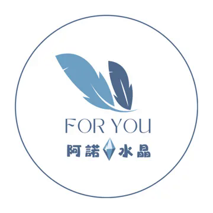

跳到連結
阿諾
水晶

阿諾ʚ ɞ水晶
天然水晶礦物・輕珠寶首飾・高雄
✦
一人工作室，用顏色挑礦石
✦
想買、想問、想來市集找我，都從這裡開始。
擺攤時間
11.21 — 11.22
週六・週日 11:00–18:00
美麗島墨凡商場 A區廊道
線上選購
賣貨便
水晶手串、盲盒與日常飾品
新品與實拍
Instagram
@loxa162・擺攤公告也在這裡
問款式・確認手圍
LINE
私訊阿諾，盲盒也在這裡對答案
日常碎念
Threads
@loxa162・礦石小知識
心得分享
Dcard
水晶知識與選購心得
看照片與規格
官網選物
每款實拍、珠徑與售價
關於阿諾
官網首頁
LINE 問阿諾